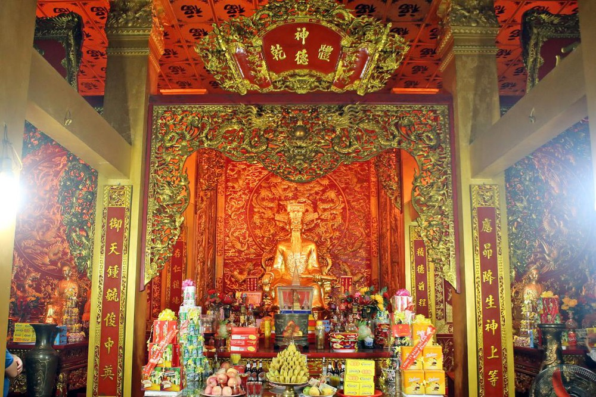
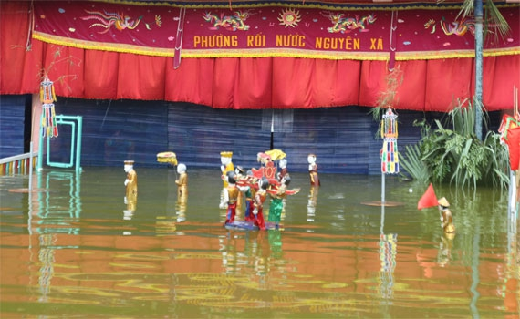

Con người, văn hóa, mảnh đất Thái Bình giàu truyền thống lịch sử, văn hóa đã vượt qua nhiều khó khăn trong công cuộc xây dựng, bảo vệ quê hương và đóng góp cho đất nước nhiều thành tựu to lớn, để lại những dấu ấn sâu sắc trong lịch sử dân tộc. Trong những truyền thống văn hóa, con người Thái Bình, đặc biệt phải kể đến tinh thần yêu nước, kiên cường, bất khuất, cần cù, sáng tạo trong lao động và truyền thống hiếu học.
Vũ Xuân Trung - niềm tự hào của quê hương Thái Bình khi đạt huy chương vàng Olympic Toán quốc tế năm 2015
Truyền thống yêu nước, tinh thần bất khuất chống giặc ngoại xâm là sợi chỉ đỏ xuyên suốt lịch sử hình thành và phát triển của quê hương Thái Bình. Trong thời kỳ Bắc thuộc và chống Bắc thuộc, nhiều người con Thái Bình đã nô nức đầu quân dưới trướng của Bát Nạn tướng quân, tiến về Long Biên đánh giặc Hán trong cuộc khởi nghĩa Hai Bà Trưng. Đến thế kỷ thứ VI, vùng đất Thái Bình lúc đó là một trong những căn cứ của cuộc khởi nghĩa Lý Bí, “căn cứ địa quan trọng, cung cấp người, của góp phần vào thắng lợi rực rỡ của cuộc khởi nghĩa Lý Bí và công cuộc bảo vệ nhà nước Vạn Xuân non trẻ”. Nhà Trần khởi nghiệp trên đất Thái Bình, mảnh đất này trở thành địa bàn chiến lược quan trọng trong cuộc kháng chiến chống quân Nguyên - Mông. Những địa danh A Sào, Hải Thị, Lộng Khê, Đào Động... đã đi vào lịch sử oai hùng của dân tộc. Chính nơi đây, trong ngày chiến thắng, Trần Nhân Tông đã khái quát sự nghiệp lớn lao của nhân dân ta trong cuộc chiến với một kẻ thù mạnh nhất thế giới lúc bấy giờ bằng câu thơ bất hủ: “Xã tắc hai phen chồn ngựa đá/Non sông ngàn thuở vững âu vàng”. Truyền thống kiên cường, bất khuất đó một lần nữa được tôi luyện trong cuộc đấu tranh chống thực dân Pháp đầu thế kỷ XIX và các cuộc kháng chiến chống thực dân, đế quốc sau này. Dưới sự lãnh đạo của Đảng, ngay từ những năm 30 của thế kỷ trước, phong trào đấu tranh cách mạng đã bùng lên mạnh mẽ với các cuộc biểu tình chính trị của nhân dân Tiền Hải, Tiên Hưng, Duyên Hà, gây tiếng vang lớn. Nhiều người con thân yêu của quê hương Thái Bình đã để lại những dấu ấn trong lịch sử dân tộc bằng tinh thần yêu nước, quả cảm, sẵn sàng xả thân hy sinh cho Tổ quốc trong cuộc kháng chiến chống đế quốc Mỹ.
Bàn thờ ngài Trần Thủ Độ
Ở bất cứ hoàn cảnh nào, con người Thái Bình luôn hăng say lao động, sản xuất. Bằng sức lao động cần cù, bền bỉ và sáng tạo, người dân Thái Bình đã đấu tranh vật lộn với đồng đất, giành giật với thiên nhiên, biến miền đất hoang dã ngập mặn thành phì nhiêu màu mỡ, tạo điều kiện tích cực cho nghề trồng lúa, mở rộng địa bàn cư trú, thuần dưỡng đất đai canh tác, phát triển ngành nghề. Công sức của các thế hệ người Thái Bình đã đưa vùng đất hoang sơ, ngập mặn thành “miền đất đầy sức sống với bạt ngàn đồng lúa, bãi dâu, làng xóm trù phú, dân đông vật thịnh, sớm đóng góp một vai trò, vị trí quan trọng trong quá trình dựng nước và giữ nước hết sức hào hùng của dân tộc”. Trong quá trình sinh tồn đầy thử thách, khó khăn, người Thái Bình đã sáng tạo ra nhiều giá trị văn hóa, cả vật thể và phi vật thể, đóng góp vào kho tàng chung của di sản văn hóa dân tộc. Đó là nghệ thuật biểu diễn chèo cổ ở Khuốc (Đông Hưng), Sáo Đền (Vũ Thư), múa rối nước ở Đông Các, Nguyên Xá (Đông Hưng), bơi chải ở Đồng Xâm…; đó là các công trình kiến trúc có trình độ nghệ thuật cao như chùa Keo và cả một kho tàng kinh nghiệm trồng lúa nước, các nghề thủ công nổi tiếng như chiếu Hới, lụa Bộ La, Mẹo, chạm bạc Đông Xâm… hết sức quý báu để lại đến tận ngày nay.
Múa rối nước ở Đông Các, Thái Bình
Là mảnh đất cách xa Thăng Long nhưng quê hương Thái Bình đã đóng góp cho lịch sử khoa bảng đất nước số lượng các vị đại khoa khá lớn. Theo số liệu thống kê, trải qua 844 năm dưới chế độ khoa cử của các triều đại phong kiến (1075 - 1919), vùng đất Thái Bình đóng góp cho đất nước 111 vị đại khoa, trong đó có 2 trạng nguyên, 2 bảng nhãn, 3 thám hoa, 26 hoàng giáp, 76 tiến sĩ và phó bảng. Mảnh đất Thái Bình đã đóng góp cho đất nước nhiều danh nhân trên các lĩnh vực: nhà bác học Lê Quý Đôn, Phạm Đôn Lễ, Ngô Quang Bích, Quách Đình Bảo, Nguyễn Mậu Kiến…